Hospital modules
The screens of a full hospital, in the normal app with the sidebar: OPD, ER, IPD, ICU, OT, maternity, dialysis, blood bank and the support units. They are for the owner, managers, desks and unit in-charges. Doctors, nurses and most desk staff do the same work in their own portal. The pictures come from the demo hospital with made-up patients.
- Every module is switched on per hospital. A lab-only customer sees none of this. A module that is not in your plan is hidden for everyone (see Settings › Subscription).
- Each module has the same parts in its sidebar group: the daily screens, Registers, Setup and Reports.
- Can't find a screen? Press Ctrl+K and type its name (Sidebar search).
- Shown dates are always DD-MM-YYYY.
How a patient moves through the hospital
-
OPD token / appointment
Front desk or OPD › Front desk.
ER arrivalWalk-in or ambulance; triage first.
- DoctorOPD / ER doctor
Notes, tests, X-ray, prescription. Advise admission if needed.
- Admission deskIPD
Bed, consultant, payer, deposit.
- Ward / ICU / OT / labour roomDoctors and nurses
Orders, MAR, vitals, operations, deliveries. Charges add up on the IPD bill.
- DischargeDoctor + desk
Summary, clearance, final bill, discharge Rx to the pharmacy, bed to housekeeping.
The patient record
Record button: doctor desk, admission chart, nurse patient, ER chart, Patients listOne record of the patient, the same on every clinical screen. The header shows name, sex, age, MRN, blood group, last weight, allergies (red), the current stay (ward and bed and day, ER bay, or today's OPD token), the consultant and the attendant's phone.
| Tab | What is there |
|---|---|
| Profile | Details, guardian, mobile, address, TibuLab ID, payer, problems. |
| Visits | OPD, IPD and ER visits, newest first; open one for its diagnosis and Rx. |
| Lab reports | Verified reports only, with ranges and flags. Compare shows one value over time. |
| Radiology | Final and amended reports with the impression. |
| Medicines | Running ward orders with the last dose, and past prescriptions. |
| Vitals | OPD, ward and ER vitals as a chart and a table. |
| Doctor notes | OPD notes, ward rounds, ER notes (read only). |
| Allergies & problems | Known allergies and chronic problems. |
| Documents | Outside reports, pinned items, scanned papers. Add outside report: photo or PDF, place, date, type, optional values. |
Who sees what
| Login | Opens |
|---|---|
| Doctor portal | Only his own patients; all tabs. |
| Nurse portal | Only patients in her ward(s) today; doctor notes read only. |
| Owner, admin, clinical staff | Everyone; all tabs. |
| Lab staff | Profile, visits (no notes), lab, radiology, allergies, documents. |
| Reception, admission desk | Profile, visits (when / where / with whom only), documents. Never clinical notes. |
Other TibuLab places
If the same person was seen at another TibuLab lab or hospital, those visits and reports join the record with a badge like "City Lab · verified there". Use the filter All · Here · Other TibuLab · Outside. Pin to this visit keeps one item under Documents.
- Shown only to staff treating the patient now (his doctor today, his ward nurse, the lab with his order today). Never to the front desk.
- Only when TibuLab is sure it is the same person (same CNIC, or same mobile + exact name + date of birth + gender).
- Every look is logged. The patient sees who looked in the patient app (Security › Who viewed my records).
- Opt-out: the patient can switch off Share my records with other TibuLab hospitals in the patient app. The record then says "The patient has switched off sharing with other places."
- Offline, the last copy is shown with "last updated … (offline)".
Consent
Consent is taken where the work is: General consent signed (and who signed) on the IPD admission form; Consents on the OT case (surgery, anaesthesia, blood transfusion, high risk) with Print consent; the day-care check-in ("Consent for the procedure is signed"); the medical record release in MRD (patient consent, CNIC checked, proof of relation). Message opt-outs are in Messaging › Opt-outs.
OPD
OPDOut-patients: tokens, appointments, the doctor desk, prescriptions and doctors' shares. Doctors work in the doctor portal; receptionists in the front desk portal.
- 1. Front deskReception
Patient + doctor + token + fee: one click registers the visit, bills the fee and prints the slip. Or Appointments › check in.
- 2. Token queueReception / nurse
Token queue by doctor. Nurse station (optional): vitals before the doctor.
- 3. Doctor deskDoctor
Call next (TV + voice), notes, ICD-10 diagnosis, prescription, tests, follow-up, admission advice.
-
Tests ordered
The desk bills them (doctors' orders to bill).
PrescriptionOPD prescriptions queue at the pharmacy.
- 4. Day closeDoctor / accounts
Doctor day close; shares and the payout run.
| Screen | Use it to |
|---|---|
| Front desk | Register a visit: patient, doctor cards with search, the doctor's token board (pick any free number), the fee from the fee rules. On the right: appointments to check in, doctors' orders to bill, today's visits. |
| Appointments | Pick date and doctor: free / booked / leave / past slots. Click a free slot to book; a booked one to move, cancel, mark no-show or check in. |
| Token queue | Today's tokens by doctor: status, vitals, call for the doctor, print, open on desk. |
| Nurse station | Patients waiting for vitals first; enter vitals; the doctor sees them. |
| Doctor desk | The doctor's EMR screen (staff version). An OPD assistant can type for the doctor of his room; the doctor signs later. F2 call next, F3 recall, Ctrl+S save, Ctrl+Enter finish. |
| Room call (no screen) | A phone or tablet calls tokens for a room with no doctor PC: call next, again, not present, break. |
| To sign | Prescriptions typed by an assistant or the pharmacy, waiting for the doctor's signature. |
| Token display (TV) | The waiting hall screen with every doctor, on a logged-in PC. |
| OPD prescriptions | The pharmacy's Rx queue (OPD + IPD discharge): pending / dispensed. |
| Paper prescription | The doctor wrote on paper: scan the slip barcode, type the medicines, attach a photo. It goes to the pharmacy like a typed Rx. |
| My earnings / Doctor payout run | A doctor's shares and payouts; accounts make draft payouts for every doctor (approved and paid in Billing › Doctor Payouts). |
| Registers | Visits, Appointment list, Admission requests. |
| OPD setup | Doctors (one HR record per doctor), Doctor schedules (his week), Departments, Procedures, ICD-10 codes, Note and Prescription templates, Fee rules, Doctor payment models, Share / commission rules, Prescription options, Token screens, OPD settings. |
| OPD tools | Results to review, Procedure room (injections, dressings), Waiting board, Doctor day close, Doctor late / absent (message the day's patients or move the day), Patient feedback, Specialty forms, Drug interactions, Dose limits, Vaccination schedule, Online booking page, VIP / restricted records. |
| OPD reports | Daily census, Doctor-wise, Department-wise, Appointments vs walk-ins, Diagnosis (ICD) frequency, Doctor shares & payouts, Waiting times. |
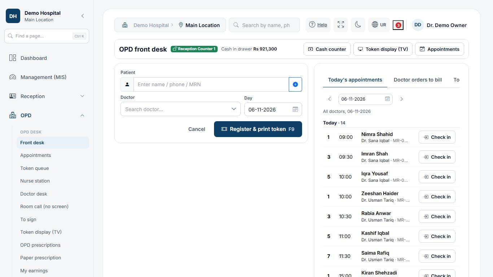
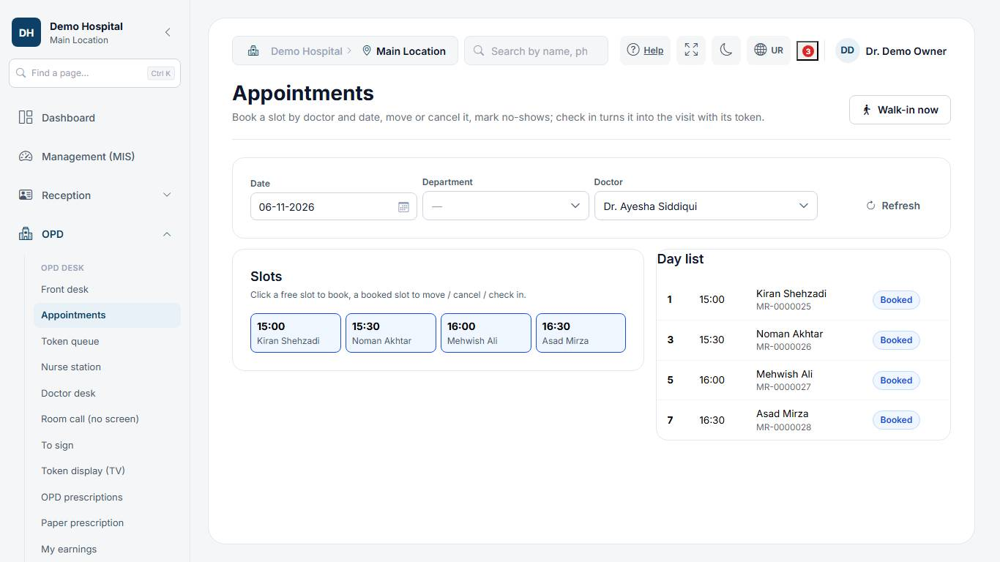
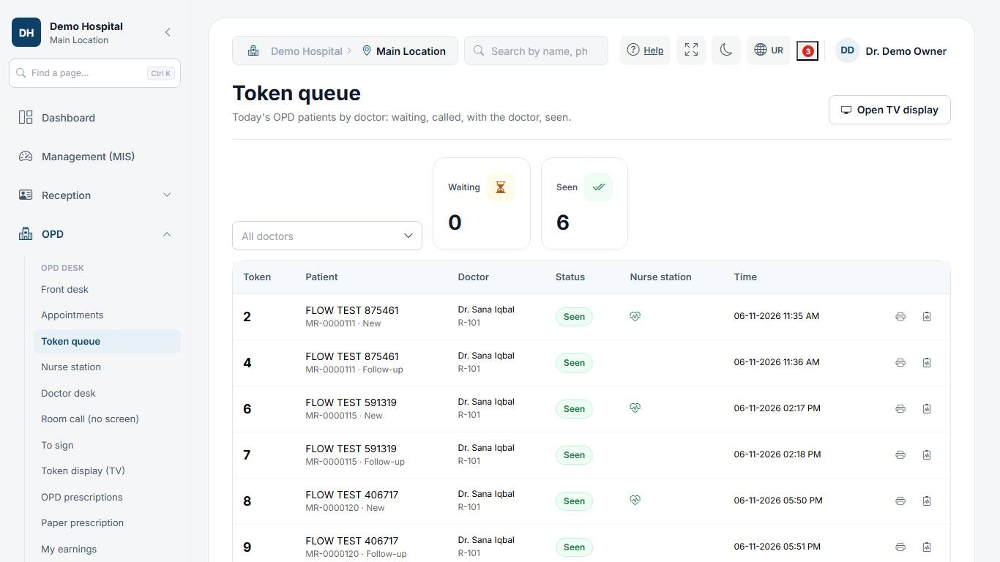
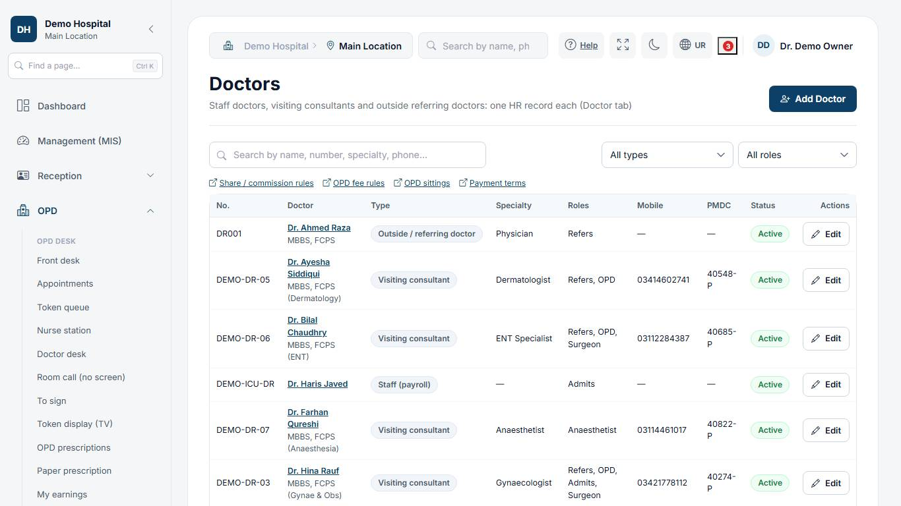
/book on your address (doctor, day, free time, name, mobile and an SMS code). Switch it on in OPD tools › Online booking page.Emergency (ER)
EmergencyER staff work in the ER portal. The same screens are here for managers.
- Tracking board: everyone in the ER by triage level then arrival, with bay, doctor, time in ER and waiting-for-doctor (red when over the level's target), pending labs / X-rays / doses and MLC. Triage and doctor can be set right in the row.
- ER chart of one visit, tabs: triage & vitals, notes, orders, doses, bill, Disposition (Discharged home, Admitted, Referred out, LAMA, DAMA, Death in ER, Brought dead, Absconded) and MLC.
- ER register: every ER visit. MLC register: medico-legal cases by police station, date, MLC or FIR no. A case holds the police details, the MLO's examination, injuries on a body diagram, samples with chain of custody, and prints the MLC certificate and police intimation. It is never deleted; a final opinion changes only with a reason.
- ER setup: Bays / trolleys, ER lists, ER settings (triage scale ESI or Manchester, consult fee, board refresh, door-to-doctor and length-of-stay targets).
- ER reports: census by triage, door-to-doctor time, length of stay, dispositions, MLC register (police station).
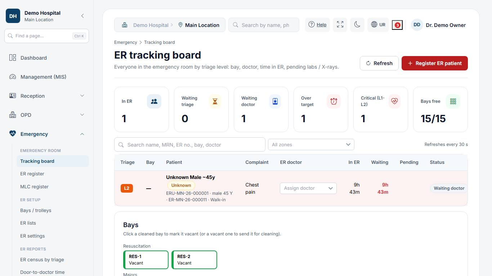
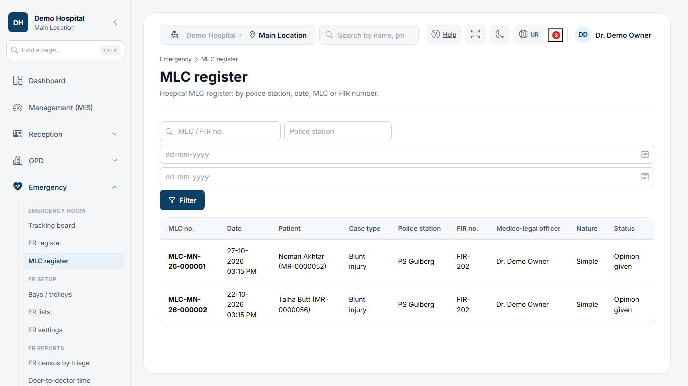
Ambulance
AmbulanceDispatch board: the fleet (available, on trip, maintenance) and active trips. New trip request (caller, pickup, landmark, destination, complaint, priority) › Assign › Left base › At scene › Transporting › Complete trip (odometer, fuel, charge per km / fixed / free). Hand over to ER registers the patient in the ER. Bill (cash) bills a finished trip. Also Trips register, Fleet (vehicle, crew from HR, rates), Lists and the Trips & revenue report.
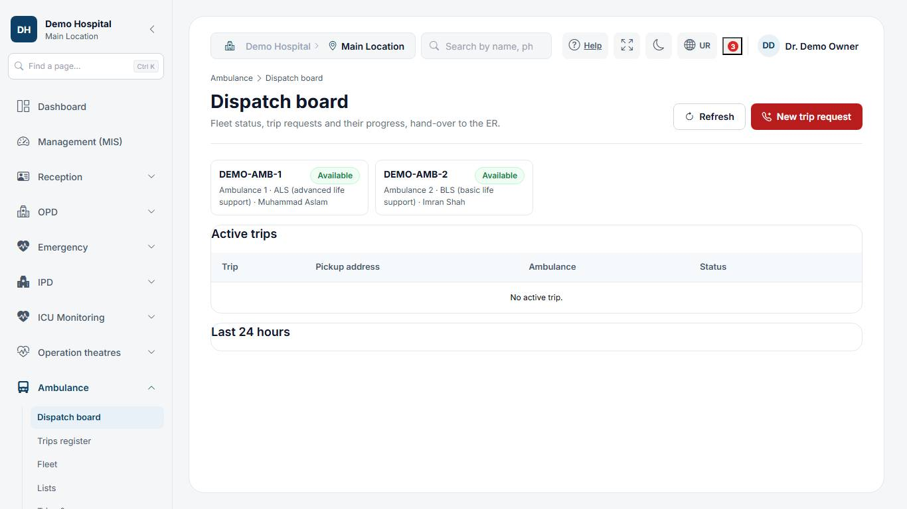
IPD: admission, wards and beds
IPDThe admission desk works in the admission desk portal, nurses in the nurse portal.
Set it up once (IPD setup)
Then IPD lists, Order sets (ready groups of medicines, diet and nursing orders) and IPD settings (day rule, visit charge, deposits and the low-deposit alert, clearances, MAR overdue time, passes, nursing shift times).
Daily screens
| Screen | Use it to |
|---|---|
| Bed board | Floors › wards › beds coloured by status. Click a bed to admit, transfer, discharge or clean. |
| Admissions | Admissions register (current and past), admit, and OPD requests waiting for a bed. |
| Admission desk | Tabs Waiting list (priority, reserve a bed, admit), Estimates, Pre-authorisations (panels). |
| Housekeeping | Beds waiting for cleaning, oldest first; cleaned = free again. Choose who cleaned at the top. |
| Diet / kitchen list | Every admitted patient's diet, ward by ward, per meal. |
| Nursing station | The ward's medicines due in 2 hours or overdue, last vitals, open tasks, shift handover. |
The patient chart
Open an admission. Tabs: Charges, Bill & deposits, Doctor (rounds, orders), MAR, Nursing, Discharge, Passes (gate passes). Doctors see only the clinical tabs; the admission desk only the money and discharge tabs.
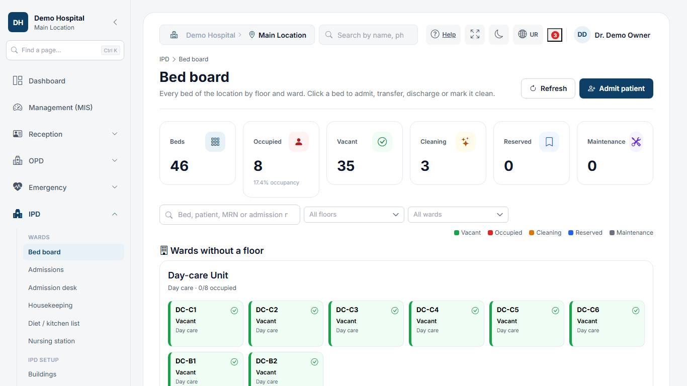
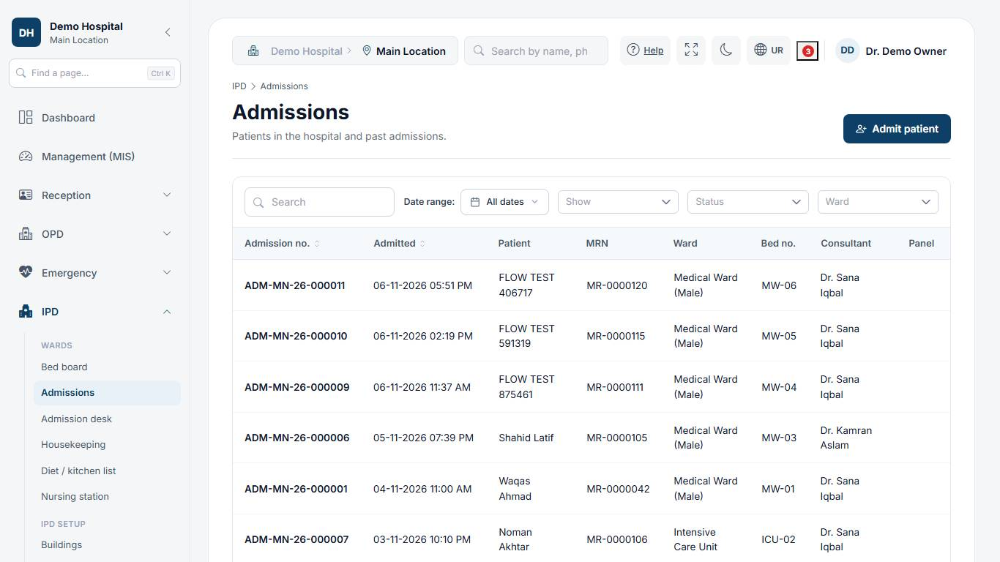
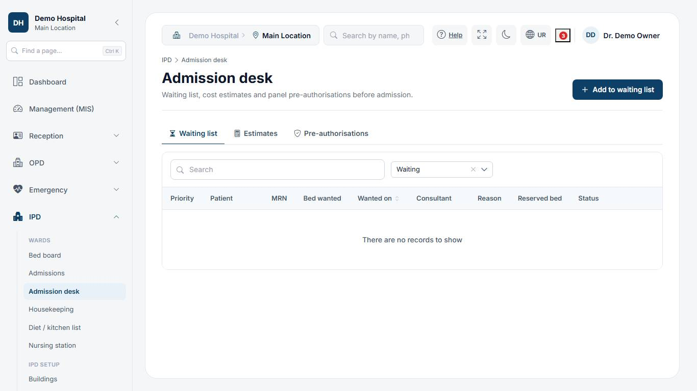
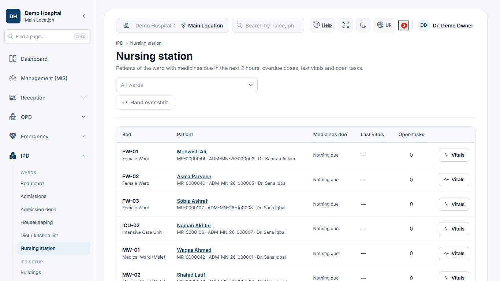
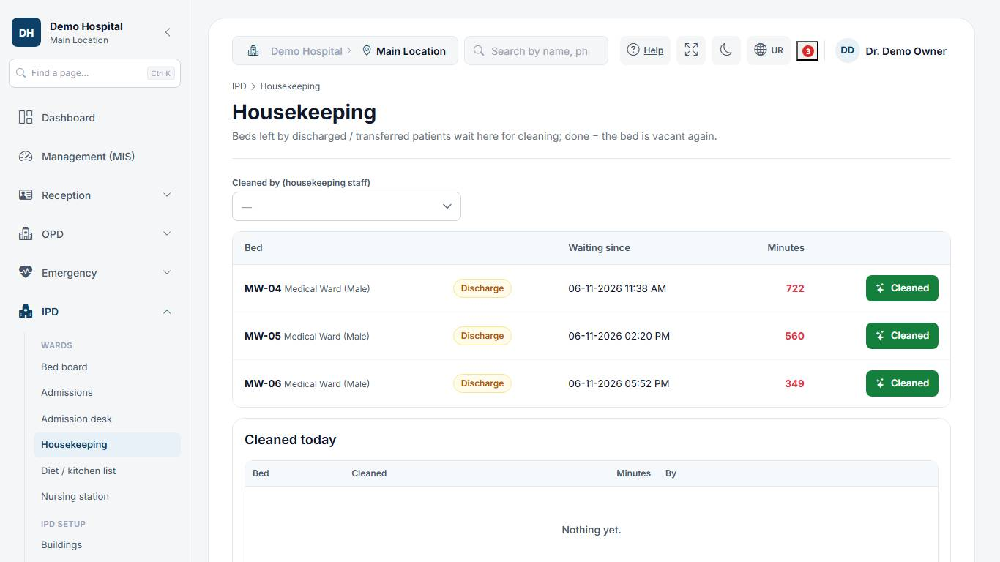
IPD reports: Daily census, Bed occupancy, Average length of stay, Admissions & discharges, IPD revenue by service, Outstanding IPD balances, Panel claims list. Deposits taken outside an admission: Billing › Patient Deposits.
Discharge
Patient chart › Discharge- 1. Order dischargeConsultant
The nurse and the admission desk see "Discharge ordered".
- 2. Discharge summaryConsultant
Condition at discharge, medicines on discharge (they go to the pharmacy as one Rx), advice. Save summary, Print summary.
- 3. ClearanceDepartments
Each department clears the patient ("n of N cleared").
- 4. Final billAdmission desk
Deposits are set against it; extra money is refunded.
- 5. Discharge patientAdmission desk
"Discharged. The bed has gone for cleaning." A discharge message goes to the patient if it is switched on.
ICU monitoring
ICU Monitoring- Live monitor: every ICU bed as a tile with live values; open alarms with sound. Acknowledge an alarm and write what was done ("Seen, O₂ increased, doctor informed"). Alarms not acknowledged in time go to the staff on duty now.
- ICU bed: live numbers, trends (1 h, 8 h, 24 h, 72 h), alarm limits, alerts, devices.
- Auto-charting: monitor readings proposed for the vitals chart. The nurse checks each: Validate, correct then Save & validate, or reject. Only validated readings go into the chart.
- Setup: Central stations, Devices, Alarm limits, Code map, Settings. Connecting monitors: ICU monitors in the installation guide.
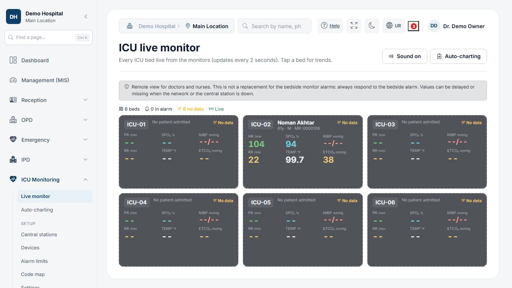
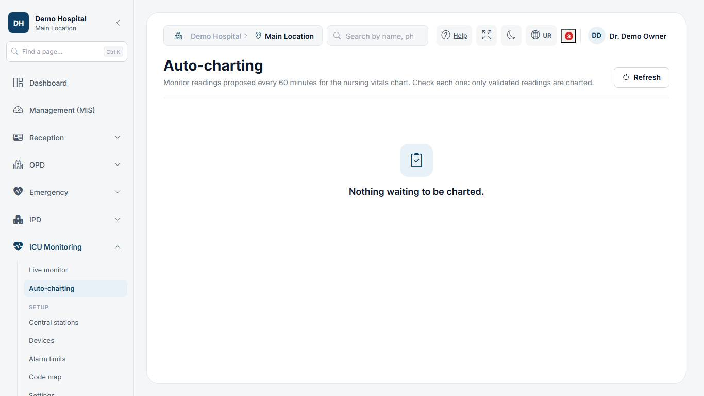
Operation theatres
Operation theatres- 1. BookOT desk
OT schedule: a day grid per theatre. Click a slot to book; drag a case to move it.
- 2. Pre-op and consentSurgeon / anaesthetist
Pre-op checks, consents (surgery, anaesthesia, blood, high risk), Print consent.
- 3. In theatreOT team
WHO checklist (Sign In, Time Out, Sign Out), anaesthesia, operation note, implants / specimens / blood, counts.
- 4. Recovery and chargesOT staff
Recovery score; charges go to the patient's bill.
The case screen tabs: Pre-op, WHO checklist, Anaesthesia, Operation note, Implants, specimens & blood, Counts, Recovery, Charges. Buttons include Print consent, Change booking, Cancel / postpone (with a reason: patient unfit, no consent, not fasting…).
OT register lists every case. Implant trace finds every patient who got a serial / batch / lot (for a recall). Setup: Theatres, OT charge slabs, Procedures / surgeries (with the note template and consent risks), Anaesthesia types, Cancellation reasons, Consumable kits (issued in one go from the OT store), Lists, OT settings. Reports: utilisation, cases by surgeon / procedure, cancellations and reasons, surgeon revenue / shares.
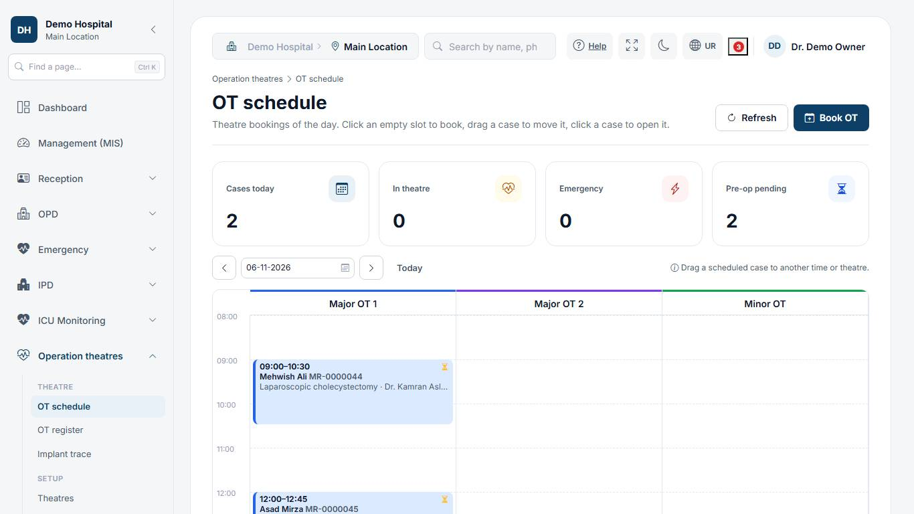
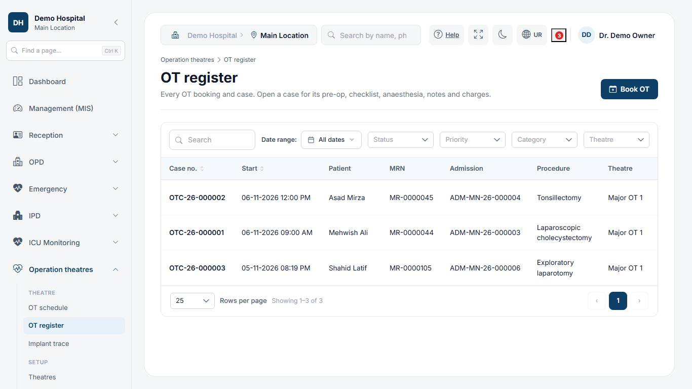
Maternity
Maternity- Antenatal cards: open a card (LMP › EDD, obstetric score, risk factors); check-ups and gestation today.
- Labour room board: every mother in labour with bed, G P, hours, last cervix and foetal heart, warnings.
- One labour: partograph (chart and entries), delivery and babies, postnatal notes, maternity charges.
- Registers: Labour register, Births register (baby, mother, MRNs, weight, APGAR, outcome, birth notification no.). Setup: Risk factors, Maternity settings (normal delivery / C-section packages, PPH and partograph alert limits).
- Reports: Deliveries by type, C-section rate, Births register, Maternal & neonatal outcomes.
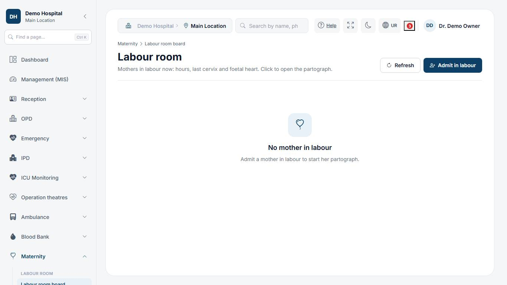
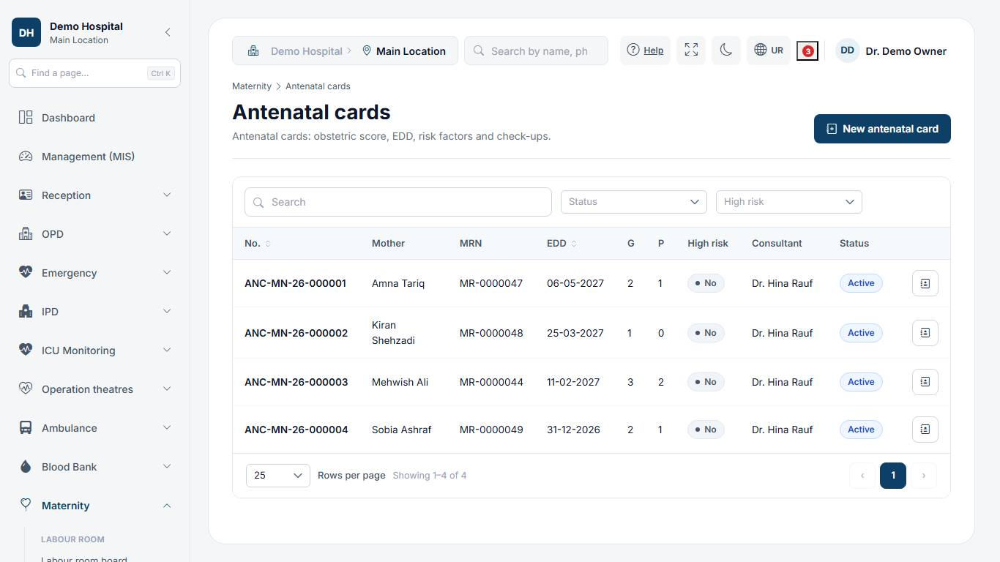
Dialysis
Dialysis- 1. Patient on the programmeDialysis unit
Dialysis patients › new profile: prescription, viral status, schedule, dialyzers, package.
- 2. Book a slotDialysis unit
Shift board: machines × shifts for a day; click a free slot to book.
- 3. SessionDialysis nurse
Start (pre), vitals during the run, end (post), summary and charge.
- 4. BillingDesk
Dialysis billing: completed sessions not yet billed, one invoice per patient (fund / panel bill when the profile says so).
Setup: Machines (viral dedication, disinfection log), Shifts, Machine types, Access types, Dialyzer types, Complications, Dialysis settings (dialyzer reuse, vitals interval, viral test validity). Reports: sessions per machine / shift, patient adherence, adequacy (URR / Kt/V), revenue.
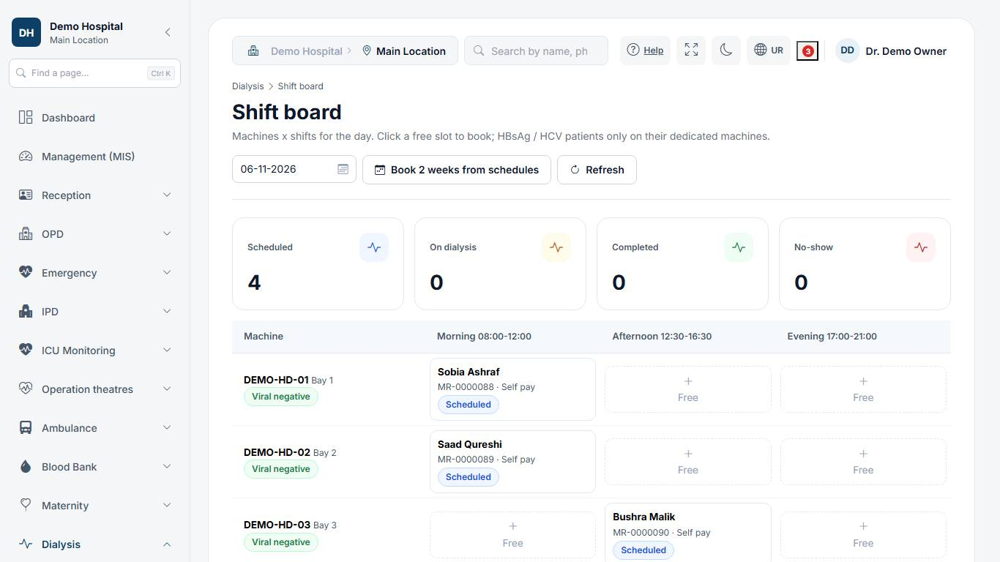
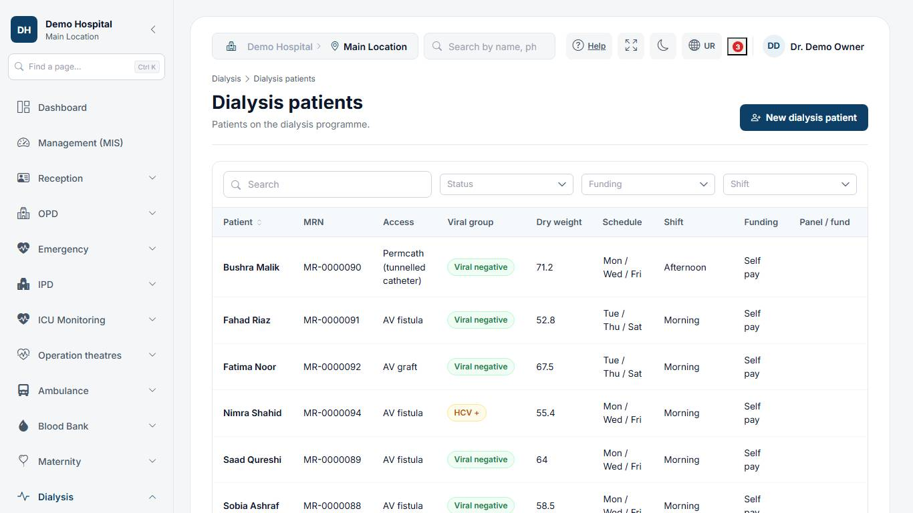
Blood bank
Blood Bank- 1. DonorBlood bank
Donors: search or register (CNIC once), questions, physical check, deferral if unfit.
- 2. Donation and screeningTechnologist
Bleeding, bag and components with labels; screening (TTI) with kit / lot and two-person verification. Reactive donors go to Deferrals to be told.
- 3. StockTechnologist
Blood stock grid (group × component), soonest expiry first (FEFO). Fridge temperatures logged.
- 4. Blood requestWard / OT / ER
Sample, grouping by two people, crossmatch and reserve.
- 5. Issue and transfusionTwo people
Issue with two scans; transfusion and any reaction recorded; charges.
Also: Unit register, Transfusion reactions, setup (storage units, screening tests, deferral reasons, donor questions, component types, bag types, anticoagulants, settings) and reports including the SBTA donor, screening and crossmatch & issue registers.
Day-care
Day-careDay-care board: chairs / beds with the patient and time in the chair, today's bookings and visits. Book, seat (check-in with "Consent for the procedure is signed"), discharge. Day-care register, Day-care procedures, Lists; reports by procedure and chair utilisation.
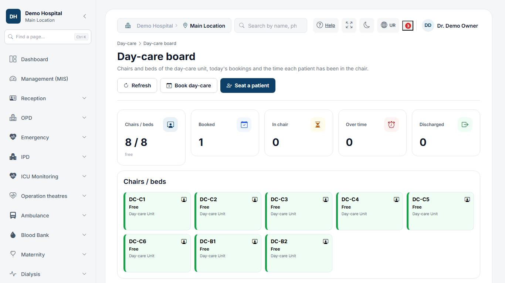
Physiotherapy
PhysiotherapyReferrals (from OPD, ward, ER, self or outside) open an episode: assessment, plan, sessions, outcome scores, discharge. Day board: the day's sessions by time; attend, no-show or cancel. Setup: modalities, outcome measures, lists. Reports: sessions by therapist, revenue, outcomes (baseline vs discharge).
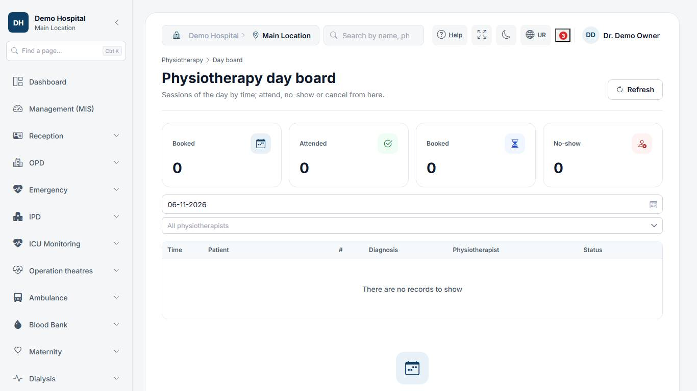
Diet & kitchen
Diet & kitchenThe doctor's diet order on the IPD chart drives everything. Meal plan & delivery: one meal, ward-wise tray check-off. Production list: how many trays of each diet. Patient diets: who is fed now, nutrition risk, review date. Setup: diet types, meal times, menus, lists, meal charges. Reports: diet census, meal charges, refused / missed meals.
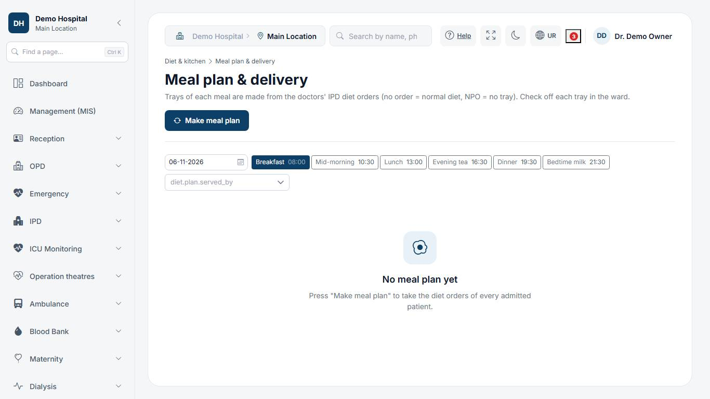
Mortuary
MortuaryCabinets board: cabinets with the bodies in them, deaths waiting to be received, receive a body. Body register; one body holds details, cabinet (move), belongings, police / postmortem, release. Reports: register, cabinet occupancy, bodies released.
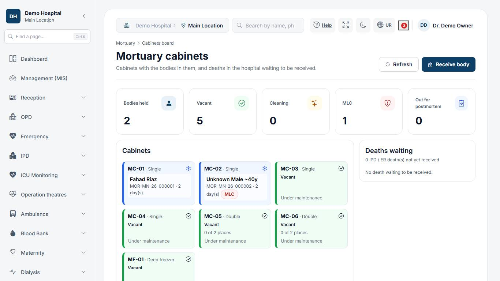
Medical records (MRD)
Medical records- Patient record: search a patient; files, scanned documents, record requests and hospital stays.
- File tracking: every file out of the record room, overdue first; return it here.
- Record requests: take a request, approve, refuse or release (patient consent, CNIC checked, proof of relation).
- Coding queue: discharged stays to code (to code, in progress, query, coded).
- Retention & archive, Merge patients (keep one record, move the duplicate, with a reason; see Merge log).
- Setup: record rooms / racks, document categories, MRD settings. Reports: file movements, requests, morbidity (ICD-10), coding turnaround, retention.
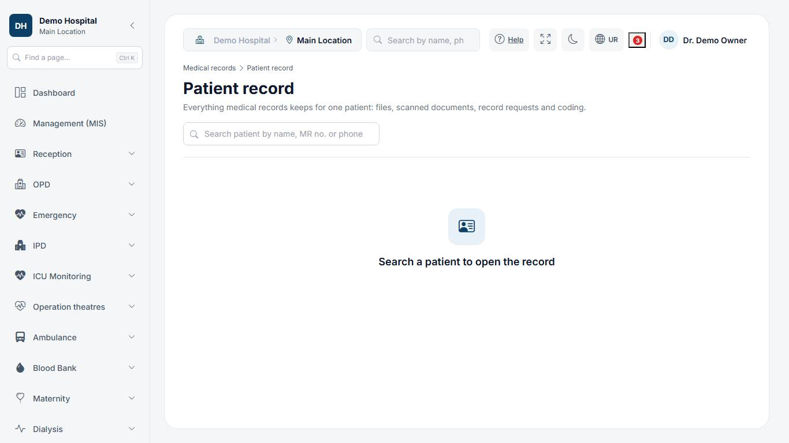
Infection control
Infection controlDashboard (open HAI cases, isolation, exposure follow-ups, hand hygiene, top organisms). Surveillance: HAI cases, Device days, HAI rates (per 1000 device days), Isolation. Staff safety: Needle-stick / exposures (confidential), Hand hygiene (WHO 5 moments). Antibiogram from verified lab cultures. Reports by ward and location.
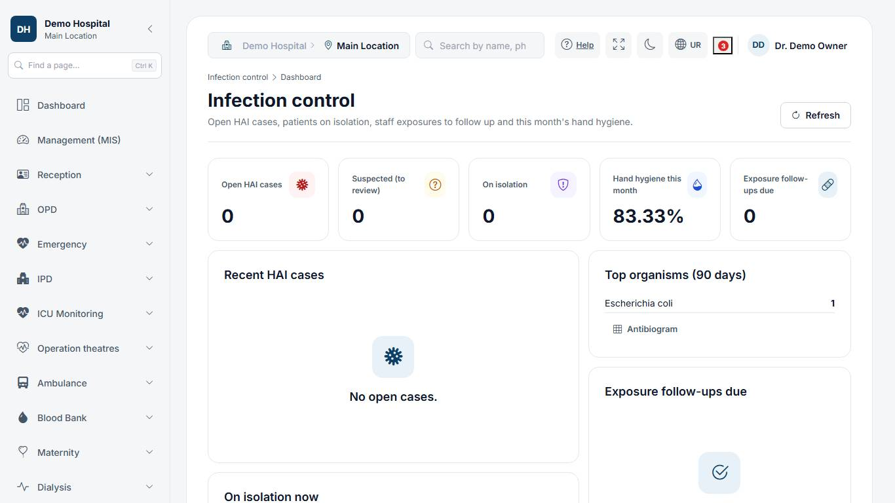
Incident & quality
Incident & qualityReport an incident is for every staff member (also from the nurse portal's Requests). Incident register (sentinel events first), root cause and CAPA tracker (actions, overdue first). Complaints & feedback (acknowledge, resolve, close, low OPD feedback). KPI scorecard per month, locked when done. Setup: incident types, KPI definitions, lists. Reports including the KPI scorecard (MSDS).
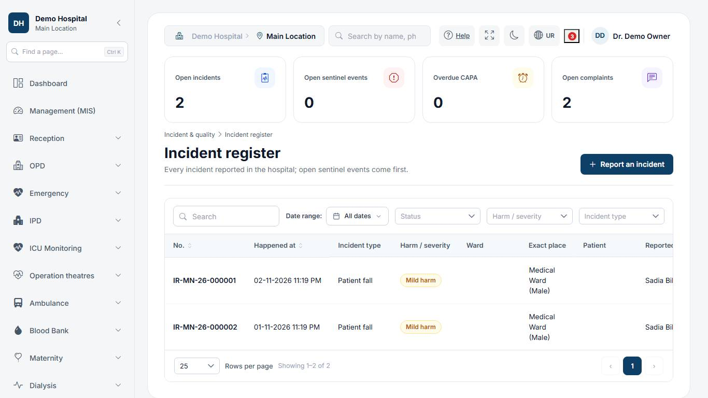
Compliance
Compliance- Disease surveillance: Notifiable diseases register (flagged from diagnoses and lab positives; confirm, report, discard), IDSR weekly report (CSV for the health department, dengue line list), disease list, flag rules, groups.
- Healthcare Commission: MSDS documents with expiry alerts, document categories, Waste log and the month summary.
- Tax: FBR POS per location (POS ID, token) and the invoice queue with resend.
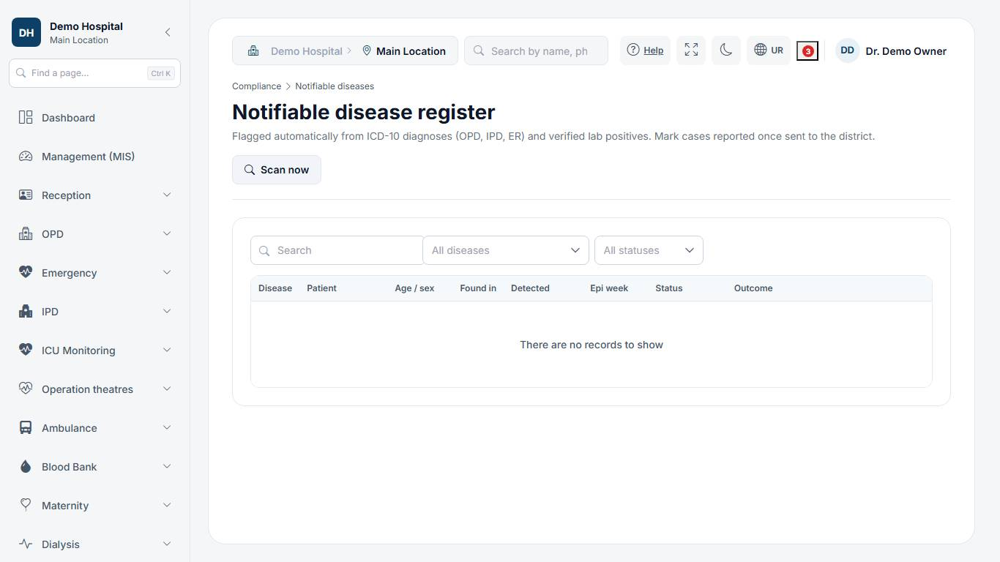
Duty roster
Duty rosterSet up Roster units (ICU, Ward 2, ER…), then fill the Monthly roster (staff × days; drag-copy, copy week / month) and publish it. On duty now shows who works now per unit. Duty swaps: ask for and approve swaps. Roster rules: rest hours, nights in a row, weekly hours, feed HR attendance. The nurse portal finds a nurse's ward from the published roster, and ICU alarms escalate to the staff on duty now.
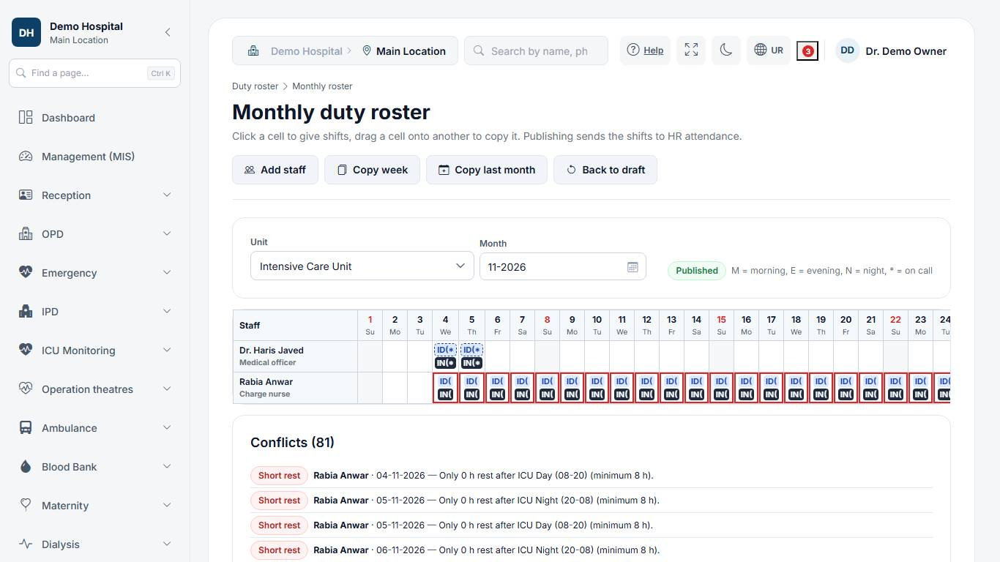
Coming later
These are planned but not in TibuLab yet.
- Clinical teams (consultant + registrar + house officer) with co-signing; verbal orders signed within 24 hours; IPD consult requests and on-call lists.
- "Break-glass": a doctor opens a patient who is not his, with a written reason (logged).
- A second nurse confirming high-alert medicines on the MAR.
- ICU scores (SOFA, APACHE II, GCS), drip titration, ventilator orders, lines and drains with days.
- Referring doctor portal: outside doctors sign in with a mobile code to see their patients' reports and commission.
- TibuLab AI reading the values of an outside report (today staff type them).
Page checked against TibuLab on 06-11-2026.